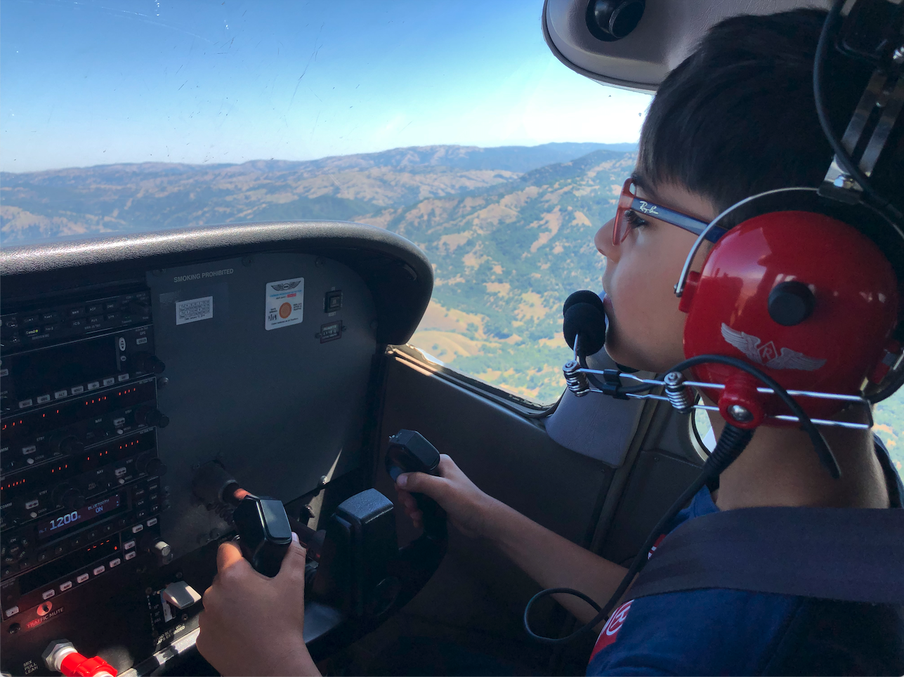
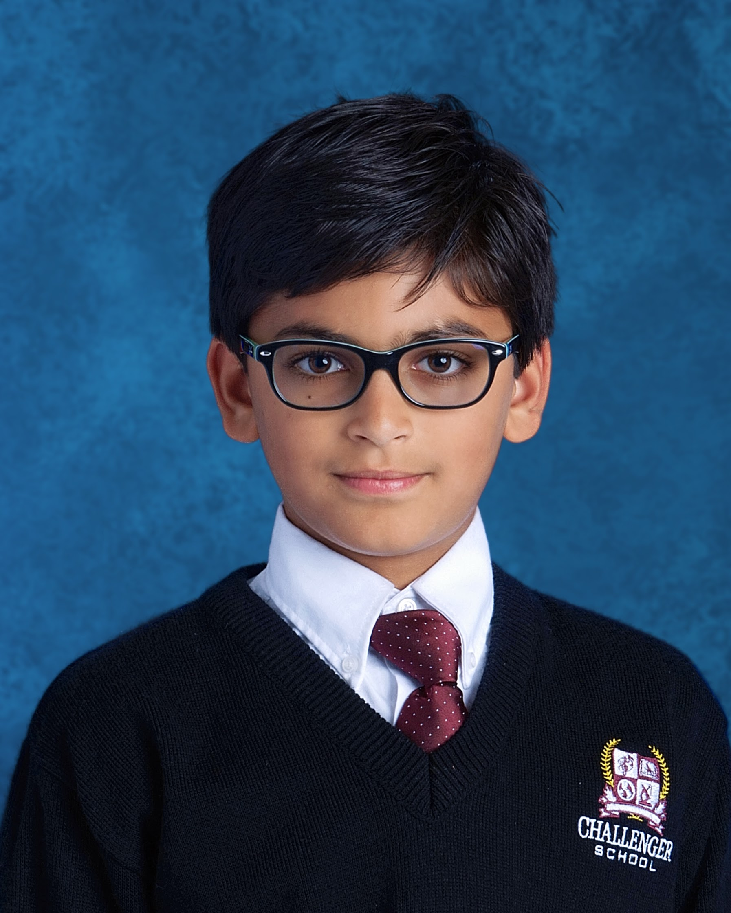
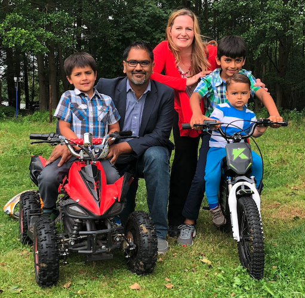

I am a 5th grade student based in sunny Bay Area, California.
I have been going to Montclaire Elementary School since August 2020. Prior to that, I was a Challenger School student since Preschool.
Living in Silicon Valley with two Engineering parents, it is not surprising that I have been learning programming since Kindergarten. I started programming in Terrapin Logo and Scratch before going into Python programming and web development. Over the summer, I self-taught myself some Swift programming and convinced my parents to buy me an iPhone so that I can develop my first iPhone app.
I enjoy reading, coding, playing soccer and flying with my dad. I am American, German, and Pakistani. Every summer, I spend 10 weeks in Germany with my grandparents in a small village south of Berlin, where I love swimming in the lake and playing with friends at summer camp.
I enjoy teaching other kids programming and developing new skills. Sign Up Here for a free virtual coding class!
You can reach me at zorez.syed@gmail.com
|  |  |  |
|---|